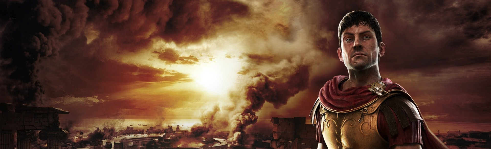

概述
《全面战争：罗马2 》是由Creative Assembly开发，世嘉发行的一款策略战争类游戏，是该系列游戏《罗马：全面战争》的续作，亦是《全面战争》系列的第七作，于2013年9月3日登陆PC平台。
游戏的背景设定在古典时代的欧、亚、非三洲，相对于《罗马：全面战争》的游戏背景几乎完全集中在罗马共和国和它的政治不同，罗马2尽可能准确和深入地刻画出在那时代的每一个文明。玩家在游戏中扮演其中一个可玩派系，而玩家想取得胜利便要比敌人更快建立一个帝国。单人游戏模式开始于公元前272年，并持续300多年。然而，玩家可以继续进行游戏，因为在罗马2中没有时间胜利条件
。
背景介绍
《全面战争：罗马2》是一款PC平台独占的策略战术类游戏。游戏的故事将发生在史上最富盛名的战争时代，会把最为庞大的扩张战争和场面最宏伟的即时战斗场景合二为一，其规模为系列之最。这是一款由开发过《罗马：全面战争》的制作公司开发的第二代作品，游戏起始于公元前3世纪初期的一段战乱时期，在短短的三十年内换了21位罗马执政官并且全都战死沙场
游戏特色
- 罗马2在地理范围上比罗马1大，西北至北爱尔兰，东南尽头至阿拉伯海。
- 游戏设计的一个关键理念是宏观地图到微观角度的转换（会有以往未曾出现过的俯瞰视角）。
- 相比1代，元老院系统改为内政系统。随着帝国的扩张，你将可以招募更多的兵团、舰队与事务官。内政变得更加重要，需要更加关注派系中各家族的动态，这将影响必然会发生的内战的形势。
- 战略地图中，游戏将按省管理以使操作简易，并 让玩家更关注与大兵团方面而不是零星单位的调动。
- 游戏将会允许你选择共和政体或帝国（仅限罗马），且有多次内战。
- 罗马2将会使用最完美的游戏引擎，最完美的光照和最完美的粒子系统。
- 在一些场景中，可以进行海陆联合作战，比如官方演示视频中的围攻迦太基城，可以指挥最多80个 单位（前提是你的电脑配置够格不够格）。
- 一个海军单位将会有最多20艘船只。
- 投射类武器如弩炮和抛石机将会有更好的应用方式。
- 视角甚至可以进入攻城塔内部。
- 更多样的攻城方式，城墙在承受足够的攻击后将会化作瓦砾。
- 士兵间的碰撞将会更具冲击力，骑兵的冲锋和投石器的打击都有可能让士兵被推飞。
- 最完美的游戏引擎将会展示无以伦比的细节，比如城墙上的一砖一瓦和城墙下的一草一木，还有 士兵身上的任何一根毛发和皮肤的粗细程度等，都清晰可见（前提是你的电脑过硬）。
- 士兵可以躲到建筑里，以及城墙上、工程器械中。
- 新的“镜头视角”将会带来类似拯救大兵瑞恩的观感。
- 每个士兵将会有完全不同的动作，对阵时，小队长将会咆哮指挥、有人将手伸到背里挠痒。有人 在队伍里交头接耳等。
- 本作将更难制作MOD。
派系介绍
| 派系 |
派系信条 |
| 罗马 |
“力量、荣誉、责任”
|
| 苏维汇 |
“鲜血、高贵、勇气”
|
| 迦太基 |
“民主、商业、虔信"
|
| 迦太基 |
“荣耀、秩序、力量”
|
| 爱西尼人 |
“铁、征服、自豪”
|
| 帕提亚 |
“宽容，公正，逐利”
|
历代版本
- 幕府将军
- 中世纪
- 罗马
- 中世纪II 王国
- 帝国拿破仑
- 幕府将军2武家之殇
- 罗马II
- 阿提拉
- 战锤
- 战锤II
- 不列颠尼亚王座
- 三国